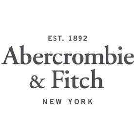

Pop Culture in 2011
Back in the day...
We all remember how the High School era was one of rampant social networking, designer clothes, and annoying hip- hop. So lets take a little walk down memoy lane, and see what was cool once upon a time...
Social Networking
Many, many hours of my high school life that were supposed to be dedicated to research papers and homework were wasted on social networking. At least, judging by the millions of other Facebook useers, I know I wasn't the only one.

Apple Products
Literally everyone either had and iPhone, iPod touch, or iPad, or really, really, really wanted one badly. Apple had unquestioned domination of consumer products market.
Call of Duty
Social networking might have been the biggest do- nothing distraction for most of high school, but Call of Duty had its own holiday. The day after the releases of Black Ops and Modern Warfare 3 left most classes a little emptier than usual.
Designer Clothes
Designer clothes were probably the most obvious everyday form of pop culture, most people wore them everyday. American Eagle, Abercrombie, and Hollister were all the rage.
Harry Potter
Harry Potter was by far the most popular book and movie series of the time.